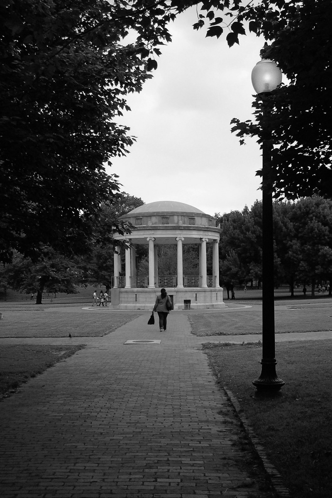
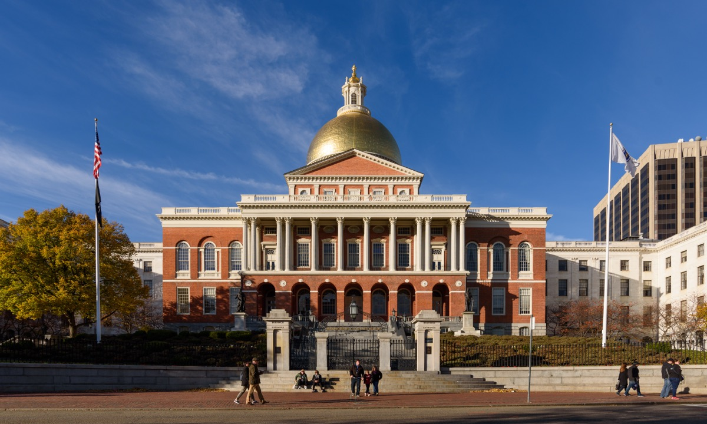
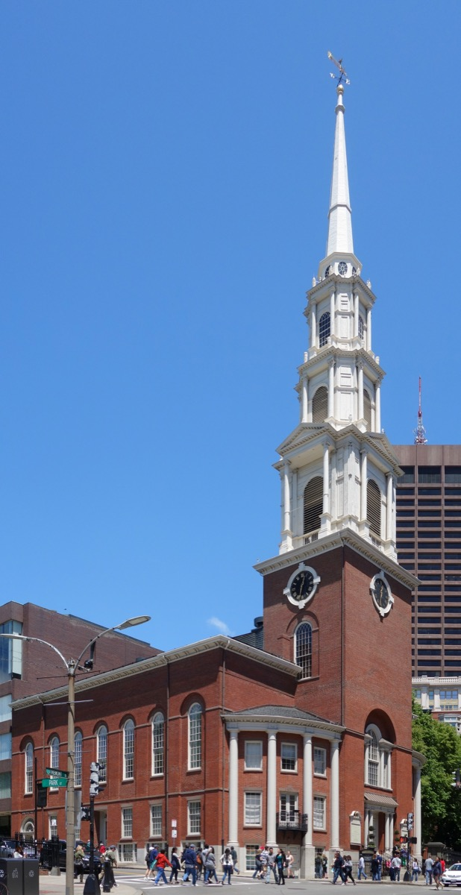
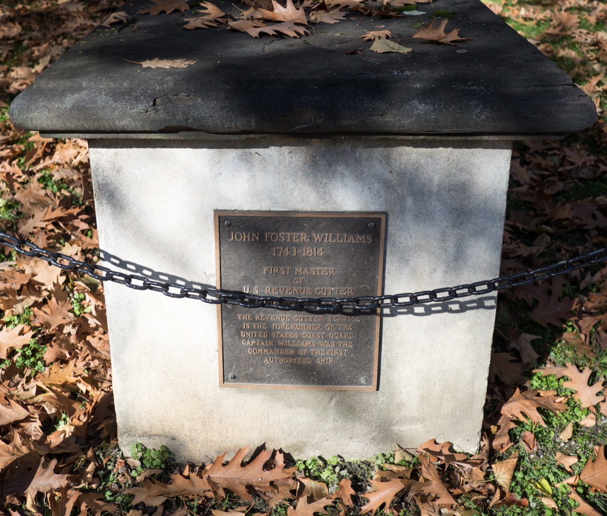
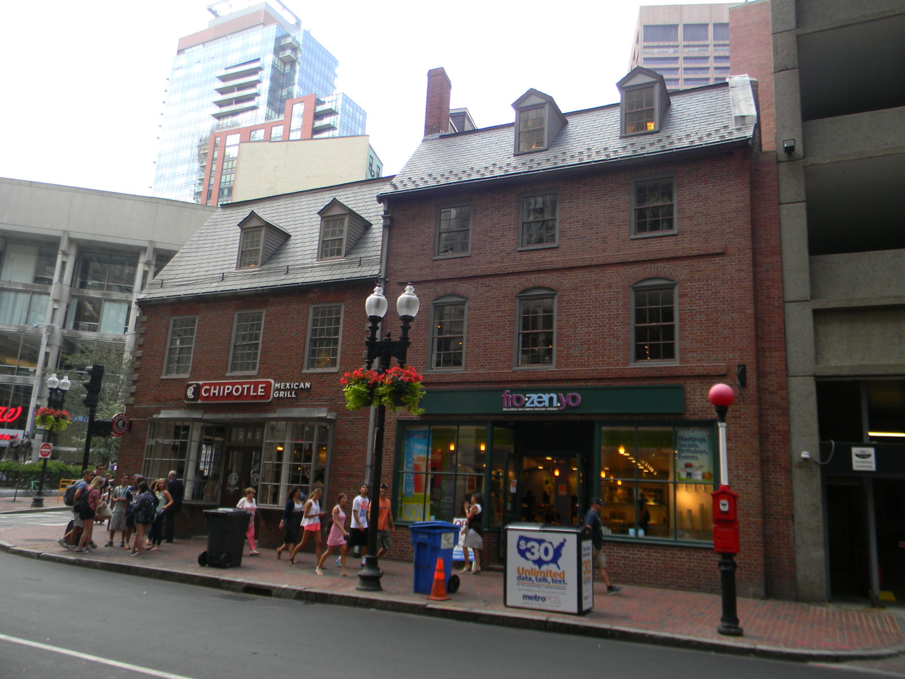
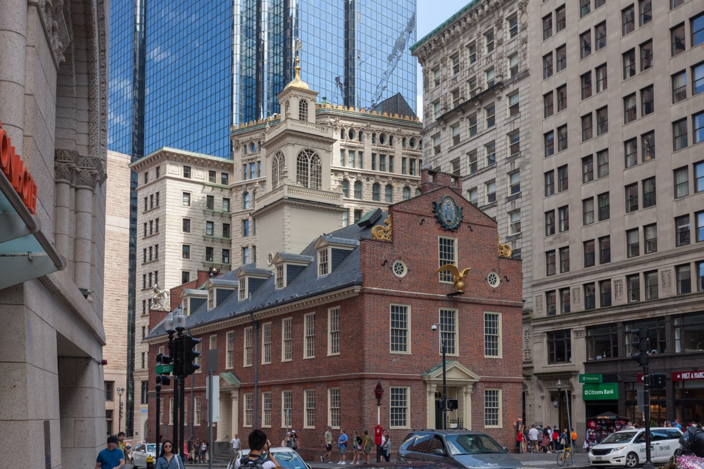
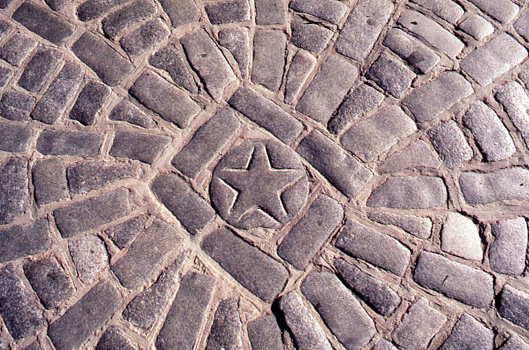
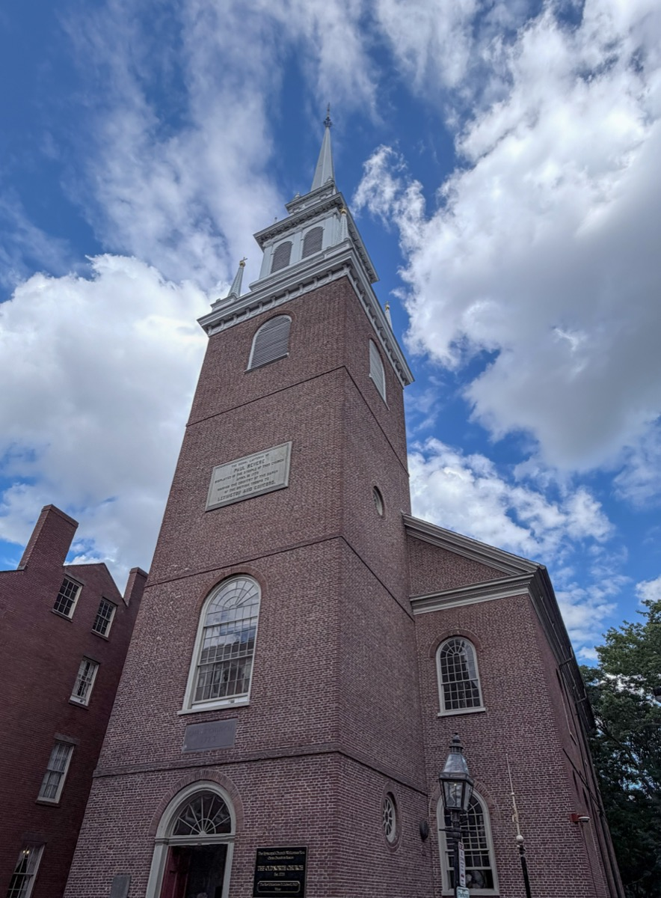
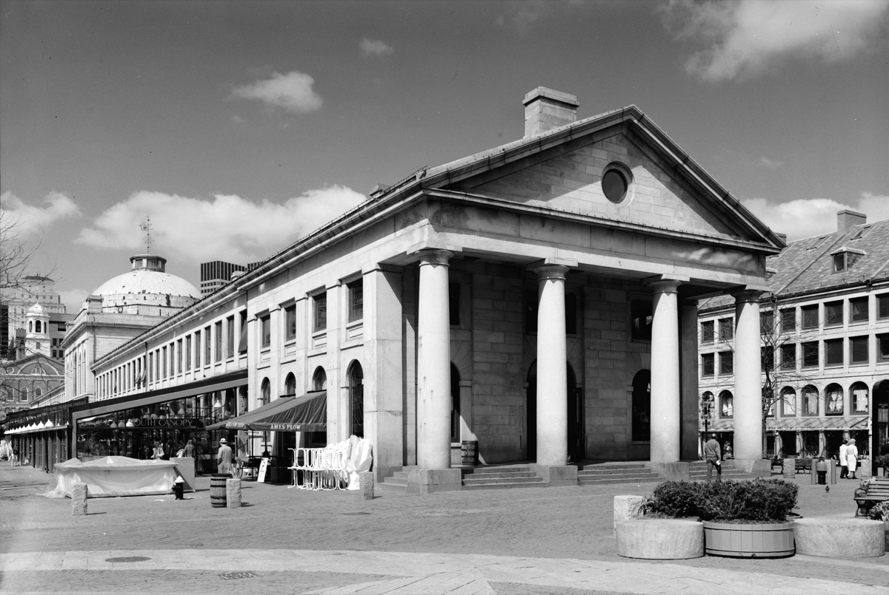
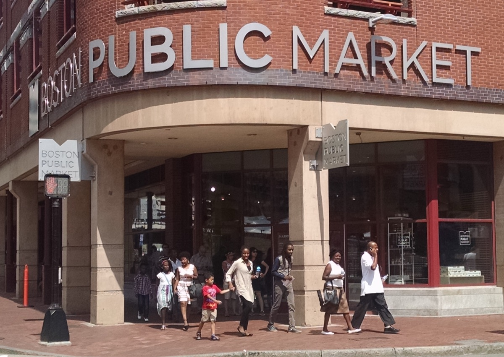

Every stop in order, what each costs, how long each leg takes, and plans for an hour, a half day or a full day.
The short answer
The Freedom Trail in 10 facts
01
What the Freedom Trail is
A red line in the sidewalk, there since 1951, linking 16 Revolution-era sites from Boston Common through the North End to Charlestown. Prefer a checklist? Do it as a challenge.
02
How long the Freedom Trail takes
2.5 miles. An hour straight through, three to five with interiors and lunch. Flat except two short hills.
| Leg | From – to | Distance | Stops | Realistic time |
|---|---|---|---|---|
| Downtown | Boston Common – Faneuil Hall | About 1 mile | 1–11 | 90 min – 2 hrs |
| North End | Faneuil Hall – Copp's Hill | About 0.5 mile | 12–14 | 45 min – 1 hr |
| Charlestown | Copp's Hill – Bunker Hill | About 1 mile | 15–16 | 1 – 1.5 hrs |
03
All 16 Freedom Trail stops, in order
Walking order, Boston Common to Charlestown.
1. Boston Common

The oldest US public park, from 1634. Grab a free map at the visitor center.
2. Massachusetts State House

Bulfinch's gold-domed capitol from 1798. Free weekday tours.
3. Park Street Church

An 1809 church where "America" was first sung, in 1831.
4. Granary Burying Ground

Samuel Adams, John Hancock and Paul Revere are buried here. Hancock is on the left wall, Revere at the back.
5. King's Chapel and King's Chapel Burying Ground

New England's first Anglican church, from 1754. Governor John Winthrop is in the 1630 burying ground next door.
6. Boston Latin School site and Benjamin Franklin statue

A sidewalk mosaic marks the first US public school, from 1635. Franklin's statue is behind it.
7. Old Corner Bookstore

The 1718 building that published Walden. Now a fast-food restaurant.
8. Old South Meeting House

Where 5,000 people met before the Boston Tea Party in 1773. One ticket also covers the Old State House.
9. Old State House

Boston's oldest public building, from 1713. The Declaration of Independence was first read from its balcony.
10. Boston Massacre site

A cobblestone ring where British soldiers killed five men in 1770. Look in the traffic island.
11. Faneuil Hall

The "Cradle of Liberty," a 1742 meeting hall. Park Service visitor center inside, with bathrooms.
12. Paul Revere House

The oldest house in downtown Boston, from around 1680. Revere rode from here in 1775. Allow 20 minutes.
13. Old North Church

Where the two lanterns were hung in 1775. The nave is free; crypt and tower tours are paid.
14. Copp's Hill Burying Ground

A 1659 burying ground with views to Charlestown. Boston's narrowest house, 44 Hull Street, is across from the gate.
15. USS Constitution

"Old Ironsides," launched 1797, the oldest commissioned warship afloat. Navy sailors give the tours.
16. Bunker Hill Monument

A 221-foot obelisk on the 1775 battlefield. The 294-step climb is free.
04
Freedom Trail map: all stops at a glance
Screenshot this.
| Stop | Site | Neighborhood | Free? | Time inside |
|---|---|---|---|---|
| 1 | Boston Common | Downtown | Free | 10 min |
| 2 | Massachusetts State House | Beacon Hill | Free | 15–45 min |
| 3 | Park Street Church | Downtown | Free | 5–10 min |
| 4 | Granary Burying Ground | Downtown | Free | 15 min |
| 5 | King's Chapel & Burying Ground | Downtown | Free (donation) | 15 min |
| 6 | Boston Latin School site / Franklin statue | Downtown | Free | 5 min |
| 7 | Old Corner Bookstore | Downtown | Free (exterior) | 2 min |
| 8 | Old South Meeting House | Downtown | Paid | 30 min |
| 9 | Old State House | Downtown | Paid | 30–45 min |
| 10 | Boston Massacre site | Downtown | Free | 2 min |
| 11 | Faneuil Hall | Downtown | Free | 15–30 min |
| 12 | Paul Revere House | North End | Paid | 20 min |
| 13 | Old North Church | North End | Free (donation); tours paid | 15–45 min |
| 14 | Copp's Hill Burying Ground | North End | Free | 15 min |
| 15 | USS Constitution | Charlestown | Free (photo ID) | 30–45 min |
| 16 | Bunker Hill Monument | Charlestown | Free | 30–45 min with climb |
05
How to do the Freedom Trail in 1 hour, a half day or a full day
One hour. Common to Faneuil Hall, outdoor sites only. See our one-day itinerary.
Half a day. Downtown with a few interiors, then the North End. Stop there.
A full day. Start at 9am, see everything, ferry back at 4:30.
| Plan | Stops | Interiors | Cost | Ends at |
|---|---|---|---|---|
| 1 hour | 1–11 (outside only) | None | $0 | Quincy Market |
| Half day | 1–14 | Six, including one paid site | About $20–25 per adult | Copp's Hill, North End |
| Full day | 1–16 | Everything, plus crypt tour and climb | About $30–40 per adult | Charlestown, ferry back |
06
Guided or self-guided: which is better
You do not need a guide. The red line and this page are enough.
- Ranger walks (free): an hour from Faneuil Hall, spring to fall. See free walking tours.
- Freedom Trail Foundation (paid): costumed 90-minute tours from the Common, around $20.
- No tour reaches Charlestown; finish that leg yourself.
07
Where to eat along the Freedom Trail
Lunch in the North End.
Quincy Market food hall

Chowder, lobster rolls and pizza stalls. Touristy but fast, at the halfway point.
Hanover Street and Salem Street, North End
Dozens of Italian restaurants on the trail. Galleria Umberto, 289 Hanover, does cheap pizza squares, cash only; Mike's and Modern do cannoli. More in our North End guide.
Boston Public Market and Haymarket

About 30 local vendors under one roof. Fri–Sat, the Haymarket stalls outside sell the cheapest fruit in town.
Charlestown: Monument Square and Main Street
The Warren Tavern, 2 Pleasant Street, open since 1780, for a burger. Zume's, 223 Main Street, for coffee.
More: cheap eats in Boston.
08
Tips before you walk the Freedom Trail
- Start by 9am so you reach Charlestown.
- Wear real shoes: brick, cobblestone and three hills.
- Bathrooms: visitor centers, State House, Quincy Market, Boston Public Market, Navy Yard museum.
- Take the ferry back to Long Wharf, then the Harborwalk.
- Buy the combined ticket for Old State House and Old South.
- Check winter hours: burying grounds close around 3pm, November to March.
FAQ
The Freedom Trail: common questions
How long is the Freedom Trail in Boston?
2.5 miles (4 km). About an hour without stopping; three to five hours with the sites.
Is the Freedom Trail free?
Yes, and 13 of 16 stops are free. Only the Old State House, Old South Meeting House and Paul Revere House charge.
Where does the Freedom Trail start and end?
Boston Common visitor center, 139 Tremont Street, to the Bunker Hill Monument in Charlestown.
Do you need a guide for the Freedom Trail?
No. A red line in the sidewalk marks the route. Free ranger walks run in season if you want one.
How do I get back from Charlestown after the Freedom Trail?
Take the MBTA ferry from the Navy Yard to Long Wharf: subway fare, 10 minutes.